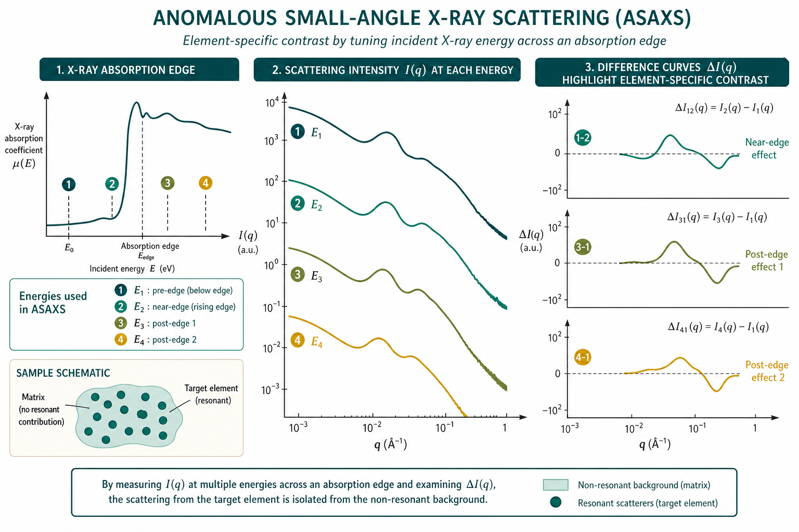

反常 SAXS（ASAXS）
Element-specific contrast by energy tuning near an absorption edge
本导读以 Goerigk 等（2003）材料科学 ASAXS 方法综述、ASAXS 专题章节（2007）与 Pabit 等（2010）DNA 离子计数实验为主线，结合 Bazin 等（1997）纳米金属簇多技术对照与 Jeffries 等（2021）SAXS/SANS 方法学综述，说明如何在吸收边附近调能量获得元素分辨衬度、如何构造差分曲线、以及材料与软物质中的典型用法与陷阱。
问题是什么
常规 SAXS 的衬度来自电子密度差：所有原子按 $Z$（电子数）贡献，无法单独「关掉」某一元素。许多体系却正需要元素分辨——合金析出相中的某一金属、催化剂纳米粒子中的活性元素、DNA 周围的 Rb+/Sr2+ 云、多层膜中相邻周期表元素等。SANS 可用 H/D 调衬度（见 SANS 衬度变化），但对特定重金属/过渡金属并不总是可行。
反常 SAXS（ASAXS）利用原子散射因子在吸收边附近的能量依赖：$f(E)=f_0+f'(E)+if''(E)$。当光子能量 $E$ 扫过目标元素的 $K$（或 $L$）边时，$f'(E)$ 急剧变负，该元素对有效散射长度密度（电子密度类比）的贡献被选择性削弱。多能量测量后做差分，可把「只含该元素的结构贡献」从总 $I(q)$ 中拆出——Goerigk 等将其概括为对特定元素的「标记」（labelling）技术（Goerigk 2003）。
ASAXS 并非常规 SAXS 的廉价替代：需要同步辐射可调单色光、边附近严格能量校准、逐能量吸收与 $q$ 刻度，且差分对束流/单色器漂移极敏感。因此只在常规 SAXS 无法给出关键信息时才值得投入（Goerigk 2003；Jeffries 2021）。
核心问题：如何选边与能量点、如何把差分曲线接到形式因子 / 模型、如何与 XAS/AWAXS 交叉验证，以及如何避免荧光、吸收校正与能量漂移毁掉差分信号。

ASAXS 吸收边能量扫描与差分" width="900">文献主线
Goerigk 等 2003：材料科学中的 ASAXS 三分法
综述将 ASAXS 在材料科学中的机会归纳为三类（Goerigk, Haubold, Lyon & Simon 2003）：
- 衬度增强与背景分离： 差分 ASAXS 突出含共振元素的散射体，能量无关的背景（孔隙、碳载体等）在差分中抵消。典型：多孔碳上 Pt 催化剂粒径分布——仅 88% 的 Pt 以平均半径 0.8 nm 的小粒子分散，约 60% 位于粒子表面、与反应物接触（Haubold et al., 引自 Goerigk 2003）。
- 相组成与比体积： 两相强度 $d\sigma/d\Omega(q)=(\rho_\alpha(E)-\rho_\beta(E))^2 S_\phi(q)$；在边附近扫能量可定析出相化学组成或各相比体积。例：Al–Zn–Cu–Mg 时效析出相中 Cu 含量仅 7–8%，EXAFS 无法决断时 ASAXS 可定量（Goerigk 2003）。
- 与 AWAXS / AXRD 联用： 小角给纳米畴尺寸与元素分布，宽角/衍射给局域配位与晶格，同一能量序列下拼接多尺度模型（Goerigk 2003）。
实验上，欧洲 JUSIFA（Hamburg）、D2AM（Grenoble）、D22（Orsay）等束线针对 ASAXS 优化：固定出口双晶单色器利于能量扫描时保持对准；反常变化小，要求通量监测、探测器效率随 $E$ 的标定与长时间稳定性（Goerigk 2003）。
ASAXS 专题章节 2007：从合金到多层膜与离子聚物
该章按应用谱系展示 ASAXS 如何打破「多模型同样拟合」的困境（ASAXS 2007）：
- GP 区与析出： Al–Zn 合金在 Zn $K$ 边下强度随能量单调变化，而 Al–Ag 对照无反常；Al–Zn–Ag 三元合金中 $\sqrt{I(Q)}$ 对 $f_{\mathrm{Zn}}$ 作图得直线，斜率给出 $\Delta c_{\mathrm{Ag}}/\Delta c_{\mathrm{Zn}}$，可跟踪 GP 区→$\varepsilon'$ 相转变时元素分配（Lyon et al., 引自 ASAXS 2007）。
- 非晶合金成分调制： Fe–Ge 膜在 Fe 边强度变、Ge 边不变 → 散射来自金属浓度涨落而非 Ge 均匀分布；峰位随金属含量移向低 $q$，关联长度 2–14 nm（Rice et al., 引自 ASAXS 2007）。
- 多层膜差分峰形： Cu/Co 超晶格在 Co 边附近 $|f_{\mathrm{Cu}}-f_{\mathrm{Co}}|^2$ 剧烈变化；两能量差分可精确扣除高阶峰本底，傅里叶反演得浓度剖面与层厚（Kato et al., 引自 ASAXS 2007）。
- 离子聚物： 磺化聚苯乙烯镍盐在 Ni 边差分后，低 $q$ 上翘与离子峰均保留 → 两者均与 Ni2+ 相关（Roche et al., 引自 ASAXS 2007）。
- 负载催化剂： 碳载 10 mass-% Pt 在 $L_{III}$ 边 ASAXS 拟合对数正态粒径分布，平均半径 $R_0=0.86$ nm（Varkamp et al., 引自 ASAXS 2007）。
Bazin 等 1997：纳米金属簇上的技术分工
对纳米级单/多金属簇，Bazin 等用 ab initio 计算比较 XAS、AWAXS、ASAXS 与 DAFS（衍射反常精细结构）各自信息量（Bazin, Sayers & Rehr 1997）：
- XAS： 吸收边附近给局域配位与电子态，但对粒径多分散不敏感；$L_{III}$ 白线强度随团簇尺寸缓慢变化，勿简单等同电荷转移。
- ASAXS： 在衍射峰 $(0,0,0)$ 附近（Debye 函数分析）可提取粒径分布、形态与簇内两金属分布——尺度恰在 ASAXS 窗口。
- AWAXS / DAFS： 宽角/衍射给晶格与长程有序；DAFS 结合衍射与吸收但受限于峰选择。
方法论启示：ASAXS 应纳入多技术联用清单，而非单独宣称「元素成像」（Bazin 1997）。
Pabit 等 2010：溶液离子计数与空间分布
DNA/RNA 周围多数补偿离子形成扩散「云」，结晶或染料法难以给出空间分布。Pabit 等证明：在 Rb+、Sr2+ 吸收边下，ASAXS 是唯一能同时给出离子数目与 $q$ 依赖分布的溶液技术之一（Pabit et al. 2010）。
实验要点：25 bp DNA 双链，0.2 mM，100 mM RbOAc 或 10 mM Sr(OAc)2；$I(q,E)$ 用水标样绝对标定至 $n_e^2$；$f'$ 用缓冲液荧光 + CHOOCH 提取（勿用金属箔 $f'$）。展开
$$I(q,E)=a(q)f'^2+b(q)f'+c(q),$$DNA 散射远大于离子云时 $a$ 项可忽略，$I$ 对 $f'$ 线性拟合；外推 $b(0),c(0)$ 至 $q=0$（GNOM）得 $N_{\mathrm{ions}}=b(0)/(2\sqrt{c(0)})$。25 bp DNA：Rb+ $34\pm3$，Sr2+ $19\pm2$，与 NLPB 预测（35.8 / 21.3）一致。快速两能量版：$N_{\mathrm{ions}}=(\sqrt{I(0,E_1)}-\sqrt{I(0,E_2)})/(f'(E_1)-f'(E_2))$（Pabit et al. 2010）。
Jeffries 等 2021：方法学地图中的位置
Nature Reviews Methods Primer 将 ASAXS 放在「调衬度」工具箱中：与溶剂对比度、SANS H/D、选择性标记并列；强调同步辐射可调能量、边附近 $f'$/$f''$ 标定与样品吸收厚度优化。原位电化学电池中 mm 级穿透使 Pt 氧化壳层随电位变化的 ASAXS 成为可能（Jeffries 2021；亦见 Goerigk 2003 原位甲醇氧化案例）。
要点与公式
原子散射因子与有效衬度
原子对 X 射线的相干散射振幅：
$$f(E)=f_0+f'(E)+if''(E),$$其中 $f_0\approx Z$（远离边），$f'(E)$、$f''(E)$ 在吸收边附近剧烈变化且由色散关系联系。实用能量窗：相对边位移 $\Delta E/E$ 约在 $10^{-3}$–$5\times10^{-2}$；更接近边时需用吸收测量 + Kramers–Kronig（DIFFKK）或合金标样校正表值 $f'$/$f''$（Goerigk 2003）。
两相体系（析出相 $\alpha$ / 基体 $\beta$）小角强度：
$$\frac{d\sigma}{d\Omega}(q,E)=\bigl[\rho_\alpha(E)-\rho_\beta(E)\bigr]^2 S_\phi(q),$$$\rho(E)=\sum_i n_i f_i(E)/\Omega_i$ 为相的电子密度；$S_\phi(q)$ 为几何结构因子（Patterson 型）。边扫描实质是只调某一元素的 $f_i(E)$，从而分离该元素对衬度的贡献（Goerigk 2003；ASAXS 2007）。
差分曲线与线性组合
两能量 $E_a$、$E_b$（均在边下、荧光可忽略区）的强度差：
$$\Delta I(q)=I(q,E_a)-I(q,E_b)$$在稀溶液、单组分共振粒子近似下，$\Delta I$ 突出含共振元素的形式因子贡献；对多组分/核–壳，差分对应「共振元素加权」的部分结构因子。实践中常取 3–5 个能量点，用线性组合或正交化分离共振项，而非只做一次简单相减（Goerigk 2003）。
二元析出相（ASAXS 2007）：若 $I(q)\propto(\sum_{i,j}\Delta c_i\Delta c_j F_i F_j)^2 S_{\mathrm{PM}}(q)$，则 $\sqrt{I(q)}$ 对 $f_{\mathrm{res}}$ 作图应为直线，斜率比给出元素浓度差之比——无需假设完整 $P(q)$ 即可检验相成分。
生物离子体系（Pabit 2010）：相干振幅叠加 $I=|f_{\mathrm{NA}}F_{\mathrm{NA}}+f_{\mathrm{ion}}(E)N_{\mathrm{ions}}F_{\mathrm{ion}}|^2$，边下展开为 $af'^2+bf'+c$；$b(q)$ 携带离子–核酸空间关联，$c(q)$ 以核酸为主。
$q$ 与能量几何
散射矢量 $q=4\pi\sin\theta/\lambda$ 随能量（波长）变化：换能量时须同步重算 $q$ 刻度，并保证同一物理 $q$ 网格上再差分。忽略 $\lambda(E)$ 会导致假差分峰谷。ASAXS 束线常在每个能量独立几何标定后再插值到公共 $q$ 网格（Goerigk 2003）。
材料 vs 软物质：两类典型问题
| 场景 | 共振元素例子 | 差分回答的问题 | 文献线索 |
|---|---|---|---|
| 合金 / 析出 / GP 区 | Zn、Cu、Ni、稀土 $L$ 边 | 元素是否富集？析出相化学比？时效阶段？ | ASAXS 2007；Goerigk 2003 |
| 催化剂 / 电极 | Pt、Pd、Ni $L$ 边 | 金属粒径分布；氧化态壳层；活性面积 | Goerigk 2003；ASAXS 2007 |
| 溶液 DNA / 聚电解质 | Rb、Sr、Tl 等反离子 | 过量离子数；离子云 $b(q)$ | Pabit 2010 |
| 多层膜 / 超晶格 | 相邻元素 Cu/Co、Nd/Fe | 层厚、界面扩散、比体积 | ASAXS 2007 |
| 纳米金属簇 | Pt、Au $L$ 边 | 粒径分布 + 簇内金属分配 | Bazin 1997 |
| 核–壳胶体 / 杂化材料 | 壳层金属或掺杂原子 | 壳是否完整、元素径向分布 | Goerigk 2003 |
与 XAS / AWAXS 的互补
| 技术 | 敏感尺度 | ASAXS 相对优势 | ASAXS 局限 |
|---|---|---|---|
| XAS (EXAFS/XANES) | 局域配位（<2 nm） | ASAXS 给纳米畴尺寸/体积分数 | XAS 不分辨多分散粒径分布 |
| AWAXS | 晶格 / 中程有序 | ASAXS 看更大不均匀体与背景分离 | 需同一能量序列拼接 |
| 常规 SAXS | 1–100 nm 总电子密度 | ASAXS 元素标记破简并 | 信噪比低、实验慢 |
数据约化与拟合策略
标准 SAXS 约化（背景、空池、透射、束流归一）之后，ASAXS 额外步骤（Goerigk 2003；Pabit 2010）：
- 能量序列： 每个 $E$ 独立 $q$ 标定 → 插值到公共 $q$ 网格。
- $f'(E)$ 表： 远离边用 Cromer–Liberman；近边用荧光/吸收 + CHOOCH 或 DIFFKK。
- 差分 / 回归： 简单 $\Delta I=I(E_1)-I(E_2)$；或多能量对 $f'$ 线性/二次回归（Pabit $af'^2+bf'+c$；合金 $\sqrt{I}$ vs $f$）。
- 模型： 差分曲线拟合共振加权 $P(q)$、粒径分布或两相 $S_\phi(q)$；或与 AWAXS 联合约束相成分（Goerigk 2003）。
- 不确定度： 差分传播 $f'$ 误差与几何误差；催化剂/合金案例显示系统误差可来自单色器漂移而非计数统计（Goerigk 2003）。
何时值得做 ASAXS（决策简图）
- 常规 SAXS 有多套模型同样拟合，且答案依赖某一元素是否富集/分布不同 → ASAXS。
- 强孔隙/碳载体背景淹没金属纳米粒子信号 → 边附近差分（Goerigk 2003；ASAXS 2007）。
- 需定量反离子云或元素选择性配位环境，且 SANS H/D 不适用 → 选合适反离子吸收边（Pabit 2010）。
- 仅需整体 $R_g$/形状、无元素分辨需求 → 优先实验室 SAXS，ASAXS 性价比低（Jeffries 2021）。
- 选边： 目标元素边可及（光束线能量范围）；优先边下（pre-edge）点，避开边后强荧光区。$K$ 边适合轻–中元素；$L$ 边适合 Pt、Au 等催化剂（Goerigk 2003）。
- 能量点： 至少 2–3 个边下点 + 1 个远离边参考；$f'$ 差足够大才有差分信噪比。生物体系常需 4–6 个 $f'$ 点做 $I(f')$ 拟合（Pabit 2010）。
- $f'$ 标定： 溶液/缓冲液荧光 + CHOOCH，或 DIFFKK；勿直接套用金属箔表值（Pabit 2010）。
- $q$ 对齐： 每能量独立做几何/$q$ 标定后再插值到公共 $q$ 网格。
- 吸收与厚度： 透射随 $E$ 变；厚度、窗口、溶剂吸收必须逐能量校正（见 绝对标定）。
- 绝对强度： 催化剂粒径、离子计数、比体积定量需绝对标定（水、玻璃碳等）；仅差分形状可相对单位（Goerigk 2003；Pabit 2010）。
- 背景： 空池、溶剂、毛细管在相同能量序列下测量；差分前先扣各自背景。
- 稳定性： 能量校准（边扫描/标样）、束流归一、样品辐射损伤与气泡——差分对漂移极敏感；Al 合金 ASAXS 精度可受单色器稳定性限制至 ~0.5%（Goerigk 2003）。
- 解释： $\Delta I(q)$ 解释为「共振元素加权结构」，勿直接当成常规 $P(q)$ 而不声明模型假设；多相时需与 XAS/电镜交叉（Bazin 1997）。
原位与动态 ASAXS
贵金属 $L$ 边 X 射线可穿透 mm 级电化学池，使工作状态下的催化剂 ASAXS 可行（Goerigk 2003）：直接甲醇燃料电池 Pt/C 电极在电位扫描中，积分 SAXS 在 ~600 mV 阳极扫时骤降；250 mV 时 Pt 粒径分布峰在 ~9 Å，1100 mV 移至 ~11 Å，对应表面氧化壳层；同步 XANES 白线证实 d 带占据变化。此类实验要求：同一能量序列下原位透射监测、荧光扣除、以及理解氧化态对 $f'$ 的影响。
常见坑
- 边后荧光进入探测器 → 如何判断： 高 $q$ 平坦本底随能量在边后陡增；差分出现非物理上翘。改测边下点或加荧光鉴别/能量窗。
- 未按能量重算 $q$ → 如何判断： 差分在峰位出现左右「导数状」假结构。强制同一 $q$ 网格再减。
- 吸收校正错误 → 如何判断： $\Delta I(0)$ 符号或量级与 $f'$ 预期不符；浓度系列不自洽。复查透射二极管与厚度。
- 能量点太近、$f'$ 差太小 → 如何判断： $\Delta I$ 淹没在噪声里。拉大边下能量间隔或延长计数。
- 用金属箔 $f'$ 标定生物缓冲液 → 如何判断： $I(f')$ 线性度差、$N_{\mathrm{ions}}$ 系统性偏离理论。必须用实验缓冲液荧光（Pabit 2010）。
- 把 ASAXS 当「免费元素成像」→ 如何判断： 无模型时差分只给加权距离信息；多相、多分散时需显式建模或与成像/EXAFS 交叉验证（Goerigk 2003；Bazin 1997）。
- 忽略非共振背景在差分中不完全抵消 → 如何判断： 孔隙/碳载体在边附近仍有残余；检查远离边参考能量或做多能量正交拟合（Goerigk 2003）。
- 溶液样品辐射损伤 → 如何判断： 同一能量重复曲线漂移；$R_g$ 随曝光增大。衰减束、流动样品、缩短单帧并平均。
相关词条
反常 SAXS（ASAXS）、 衬度、 散射长度密度、 散射矢量 $q$、 形式因子
相关学习章与专题
- 02 散射基础 — $q$、衬度与 $P(q)$
- 03 仪器 — 同步辐射可调能量与几何
- 绝对标定 — 透射、厚度与绝对强度（ASAXS 定量必备）
- SANS 衬度变化 — 另一条「调衬度」路线（H/D）
- 数据约化 — 多能量序列的背景与 $q$ 对齐流程
文献列表
- Anomalous small-angle X-ray scattering in materials science. G. Goerigk, H. G. Haubold, O. Lyon, J.-P. Simon (2003). DOI: 10.1107/S0021889803000542
- Anomalous Small-Angle X-ray Scattering（书章节）. ASAXS (2007).
- Comparison between X-ray Absorption Spectroscopy, Anomalous Wide Angle X-ray Scattering, Anomalous Small Angle X-ray Scattering, and Diffraction Anomalous Fine Structure Techniques Applied to Nanometer-Scale Metallic Clusters. D. C. Bazin, D. A. Sayers, J. J. Rehr (1997). DOI: 10.1021/jp9721311
- Counting ions around DNA with anomalous SAXS. Suzette A. Pabit, Steve P. Meisburger, Li Li, Jessica S. Lamb, Xiaobing Zuo, Lois Pollack (2010). DOI: 10.1021/ja107259y
- Small-angle X-ray and neutron scattering. Cy M. Jeffries et al. (2021). DOI: 10.1038/s43586-021-00064-9